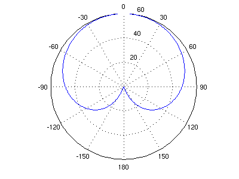
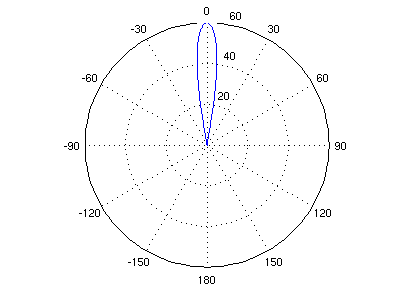
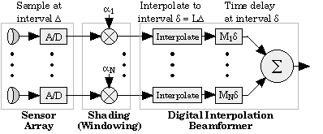
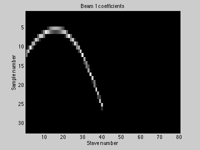

A beamformer is a spatial filter that operates on the output of an array of sensors in order to enhance the amplitude of a coherent wavefront relative to background noise and directional interference. The figure below shows a curved array of hydrophone sensors, or staves. Each sensor (red circle) is located at an (x,y) coordinate as shown. These sensors are pointed in known directions (blue arrows), and we wish to form beams which point in chosen directions (green arrows). The "pointing direction" is called the Maximum Response Angle (MRA), and can be arbitrarily chosen for the beams.
The response of a given element is plotted on a polar graph, where the angle is the offset from the MRA, and the radius is the magnitude response (dB) in that direction. Element responses (determined by the 3dB down point) are very wide -- in this example the width is about 90 degrees. The goal of beamforming is to sum multiple elements to achieve a narrower response in a desired direction (the MRA). That way when we hear a sound in a given beam, we know which direction it came from. Real implementations introduce things such as nulls and sidelobes, which we won't discuss here.

Time-domain beamforming is done by delaying and adding shaded outputs from an array of transducers. The (optional) shading of the sensor outputs is done to improve the spatial response characteristics of the beam, and is roughly equivalent to "windowing" in DSP theory. Each beam is formed by delaying and summing sensor elements. The following block diagram shows how a single beam is formed from N transducers, in an analog beamformer.The delay used for each sensor element is determined by array geometry and the desired MRA. Projecting the elements onto a line which is perpendicular to the beam's MRA gives a distance for each element. This distance (divided by the speed of sound) gives the delay required to form the beam at the desired MRA.
Note that we did not use every sensor to calculate every beam. Since our array is curved, each sensor contributes to each beam differently. In the following plot, high responses are white and low responses are black. If the element and the beam point in the same direction, the response is high.
It doesn't make sense to use elements which point in the wrong direction. In the following plot, any element which is some fixed threshold below its maximum is zeroed out. Now we're only using the non-zero elements to form each beam. This step saves on processing, with minimal beam degradation.

In a digital implementation, we sample these elements at a rate just above the Nyquist criterion. Although this preserves the frequency content of the signal, this does not give enough steering delay resolution. Digital interpolation is performed, increasing the steering-delay resolution by a factor of L. Now time delays are quantized to integer sample delays. In this example we use unity shading, and simply interpolate across two samples. As a result, all coefficient values are between zero and one. The figure below plots these values, where white is one and black is zero. Non-zero coefficients are extremely sparse, allowing efficient implementation. Note that each "picture" contains the values required to calculate one sample of one beam output.

Modeling the beamformer as a FIR filter allows for a simple, concise organization of the algorithm. For our model we use the following parameters, with values from the example in parentheses:
- T - the total number of elements in the array (80)
- D - the maximum sample delay due to array geometry (31)
- L - the length of the interpolation filter (2)
- B - the number of beams calculated (61)
- S - the number of staves (elements) used to calculate a beam (50)
If multiple samples of the entire sensor array are stored contiguously in memory, then each beam's coefficients can be represented by a FIR filter of length N = (D+L-1)T. Now the entire beamforming operation (for one sample of B beams) can be represented by a single operation:
The FIR filter length, N, can be extremely long -- in our example it is 2560. However, the number of non-zero coefficients is only 100, for a sparsity of 96%. As a result, 6100 multiply-accumulates (MACs) are required per sample. At high-frequency sonar sample rates, we are approaching one billion MACs per second.

For additional information:
- R. G. Pridham and R. A. Mucci, "A Novel Approach to Digital Beamforming." Journal of the Acoustical Society of America, vol. 63, no. 2, pp. 425-434, Feb. 1978.
- R. G. Pridham and R. A. Mucci, "Digital Interpolation Beamforming for Low-Pass and Bandpass Signals." Proceedings of the IEEE, vol. 67, no. 6, pp. 904-919, June 1979.
- R. A. Mucci, "A Comparison of Efficient Beamforming Algorithms." IEEE Transactions on Acoustics, Speech, and Signal Processing, vol. ASSP-32, no. 3, 548-558, June 1984.
- D. E. Dudgeon and R. M. Mersereau, "Multidimensional Digital Signal Processing." Prentice Hall, 1983.